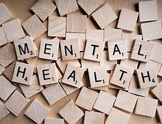

Your Mental Health is IMPORTANT!!!!
If you or your love ones are feeling overwhelmed, down or hopeless; always seeks help. I know things get tough. Please remember you are not required to always put on a brave face. If you need help, get help! I have listed some resources below. I am rooting for you!
In case of an emergency, please call 911 or the National Suicide and Crisis hotline at 988.
Resources
Baltimore City DSS: 443-378-4600
Baltimore County DSS: 410-877-TIME(7463)
Baltimore City Crisis Response: 410-433-5255
Baltimore County Crisis Response: 410-931-2214
Crisis Text Line: text "TALK" to 741741; you can also text the word "HOME" for free 24 hour support
Maryland Suicide and Crisis Hotline: 1-800-422-0009
Maryland Food Bank: 410-737-8282
211 Maryland: Dial 211
Sheppard Pratt's Urgent Walk-In Clinic(Towson)- 410-938-5302
National Suicide Prevention Lifeline (Dial 988 or Click Link*)Remember you are not alone. When I am feeling down, I love listening to music. Here are some songs that I listen to help me feel better.
Brother by NeedToBreathe.Lovely Day by Bill Withers.
Adventure of a Lifetime by Coldplay.
Keep Your Head Up by Tupac
Go Get it by Mary Mary
Best Day of My Life by American Authors
Dont You Forget It by Glenn Lewis
Happy by Pharrell
Good Mood by Adam Levine
Worth by Anthony Brown & Group Therapy
Jesus Is A Love Song - Karen Clark Sheard
More Than I Can Bear by Kirk Franklin & God's Property
Grateful by Hezekiah Walker & The Love Fellowship Choir
Stand by Donnie McClurkin